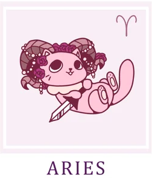

Овен/Aries
Год откроет интересные перспективы. В целом, его смело можно назвать удачным, однако некоторые трудности на пути
все же возникнут. Ключ к успеху — сохранять здравый смысл и действовать разумно, взвешенно, а не поддаваться
сиюминутным порывам. Умение обуздать свой импульсивный характер станет главным вашим преимуществом.
Старт года, январь и февраль, задаст мощный деловой ритм. Это время невероятной продуктивности и карьерных
прорывов. Смело берите инициативу в свои руки — вас ждут удачные переговоры, выгодные предложения о
сотрудничестве и реальный шанс подняться по карьерной лестнице. Вероятно улучшение финансового положения, но
будьте готовы к тому, что вместе с деньгами придут и новые заботы, большая ответственность. Вам предстоит
расставить приоритеты и решить, что для вас важнее. Новые обязанности поначалу могут показаться неподъемными, но
если вы готовы учиться и адаптироваться, то справитесь со всем без исключения.
После продуктивного старта вас ждет испытание на прочность — первая половина марта окажется сложной в
эмоциональном плане. Могут неожиданно напомнить о себе старые нерешенные проблемы, станет сложнее находить общий
язык с близкими, возможны разногласия с любимым человеком. В этот период особенно важно помнить: решать проблемы
в отношениях с другими стоит только после того, как вы разберетесь со своими собственными чувствами, обидами и
внутренними конфликтами. Проявите мудрость и терпение.
Но любая гроза сменяется ясной погодой. За сложным периодом последует светлая и очень удачная полоса. В течение
нескольких последующих месяцев вас ждет стабильность и процветание: финансовое положение станет более прочным, в
семье воцарится гармония, во всех сферах жизни начнутся перемены к лучшему. Это время пожинать плоды своего
труда и наслаждаться заслуженным покоем.
Осенью акцент сместится на личные отношения. Многие Овны всерьез задумаются о создании семьи или укреплении
существующего союза, и звезды будут благоволить этим стремлениям. Однако находясь на позитивной эмоциональной
волне, важно не забывать и о практических вещах: обустраивайте свой дом, откладывайте деньги, словом, всячески
заботьтесь о будущем в материальном плане.
Гармония между чувством и расчетом — вот формула вашего успеха в этом году.